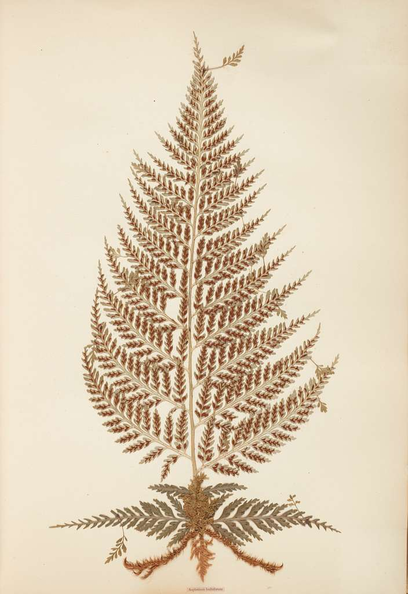
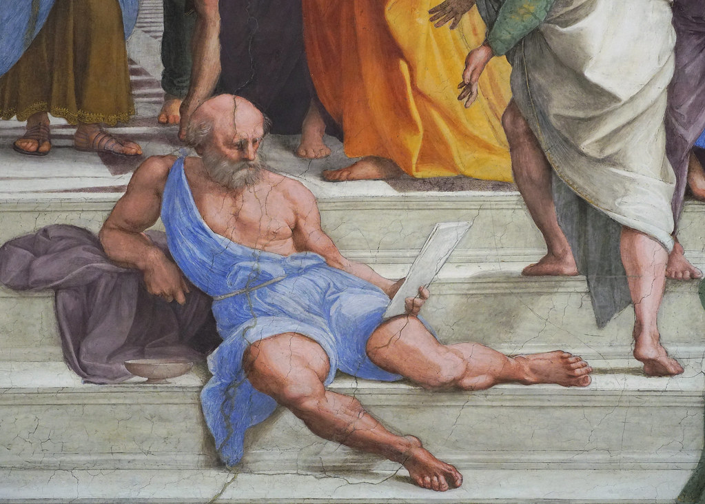

Build a Boquet
Lotus (Purity, enlightenment)

Fern (Magic)

Thyme (Strength, courage)

Lotus (Purity, enlightenment)
Fern (Magic)
Thyme (Strength, courage)
Leonardo Da Vinci

Paracelsus
Isaac Newton

Marcus Aurelius

Diogenes
Something Bigger, Something Brighter - Pretty Girls Make Graves
Drive - REM
Roland the Headless Thompson Gunner - Warren Zevon
Venus in the Furs - The Velvet Underground
Scream and Shout - Will.I.Am (feat Britney Spears)
Heads Will Roll - The Yeah Yeah Yeahs
By the Way - Red Hot Chili Peppers
Venus - Shocking Blue
Tainted Love - Soft Cell
Two of Hearts - Stacy Q
Crimson and Clover - Tommy Lee and the Shondels
X Gonna Give it to Ya Maybe - DMX and Carly Rae Jepson Mashup
Hell is for Children - Pat Benatar
Still into You - Paramore
Spiderwebs - No Doubt
If Today Was Your Last Day - Nickelback
Banana Man - Tally Hall
Applause - Lady Gaga
Bite Me - Avril Lavigne
Welcome Home - Coheed & Cambria
While My Guitar Gently Weeps (Acoustic Version) - The Beatles
What You Waiting For? - Gwen Stefani
The Phoenix - Fallout Boy
How to Save a Life - The Fray
Monstrance Clock - Ghost
Sanctuary - Utada Hikaru
25 Minutes to Go - Johnny Cash
Out of Touch - Hall & Oates
Before My Body is Dry - Kill La Kill OST
Systematic Love - Camellia/Hatsune Miku
Backside of the TV (Lotus Juice Remix) - Lotus Juice & Shihoko Hirata
Velonica - Aqua Timez
Theme of Laura - Akira Yamaoka
STYX HELIX - MYTH & ROID
Unpainted - Takeharu Ishimoto